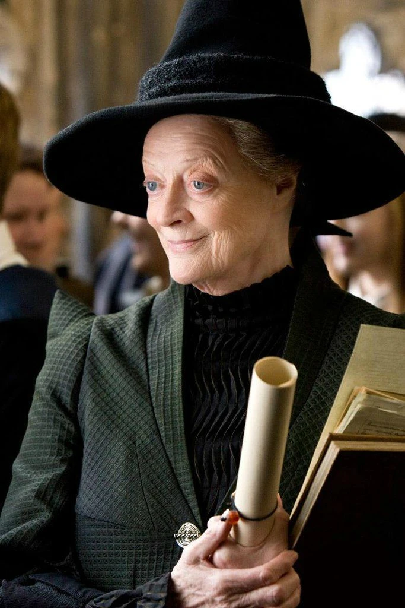
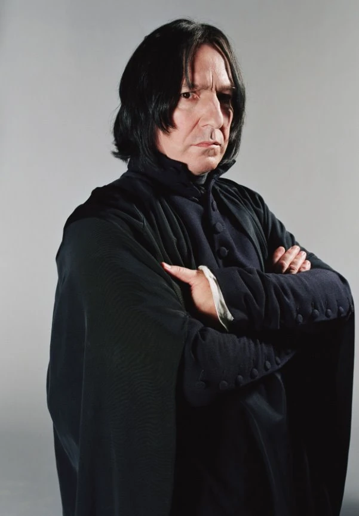

Альбус Дамблдор (Директор)

Мудрый, могущественный, но скрытный старец. Обожает лимонные дольки и верит в силу любви.
Минерва Макгонагалл (Трансфигурация)

Строгая, справедливая, декан Гриффиндора. Анимаг (превращается в кошку), не терпит нарушений дисциплины.
Северус Снегг (Зельеварение / ЗОТИ)

Холодный, язвительный, мастер ментальной магии. Самый загадочный преподаватель с трагической судьбой.